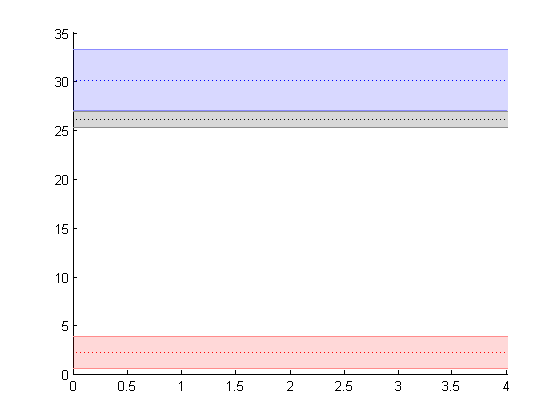

Contents
function controlCompareSet(errorSet,exp_number,exp_label,graph_title)
--- Part I Load and plot Control values ---
load('F:\UserElGuapo\DBOx\Dropbox\ResearchMagic\RandomProyects\160110 12 Effects of AR\MASTER Dataset\ControlSummaryOFF.mat')
graph_IQM_error_v=repmat([ ControlSummaryOFF.table3exp.ScR_3exp_CI;...
ControlSummaryOFF.table3exp.TfR_3exp_CI;...
ControlSummaryOFF.table3exp.CcR_3exp_CI],1,3);
graph_IQM_mean_v=repmat([ ControlSummaryOFF.table3exp.ScR_3exp_mean;...
ControlSummaryOFF.table3exp.TfR_3exp_mean;...
ControlSummaryOFF.table3exp.CcR_3exp_mean],1,3);
x1=[0,2,4];
mulineprops.style=':';
mulineprops.width=1;
figure; hold on; mseb(x1,graph_IQM_mean_v,graph_IQM_error_v,mulineprops,1);
laline.style='o--';
hold on;

--- Part II Overlay, plot current values
x2=[0,2,4];
plot(x2,ScR_v,'k--o')
plot(x2,TfR_v,'g--o')
plot(x2,CcR_v,'b--o')
Undefined function or variable 'ScR_v'.
Error in controlCompareSet (line 41)
plot(x2,ScR_v,'k--o')
Formating
title(graph)
ax = gca;
set(ax,'XTick', exp_number);
set(ax,'XTickLabel',exp_label);
xlim([0.5,max(exp_number)+1.5])
ylabel('dB')
savethisone([graph_title, 'over Control mu+CI']);